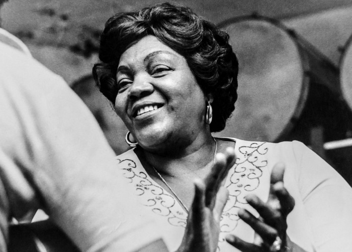

A rainha do samba
Yvonne Lara da Costa, mais conhecida como Dona Ivone Lara foi uma cantora e
compositora brasileira.
Nomeada Rainha do Samba e Grande Dama do Samba ela foi a primeira mulher a assinar um samba-enredo e
a fazer parte da ala de compositores de uma escola de samba, a Império Serrano no Rio de Janeiro.
Sua História
Dona Ivone Lara nasceu em 13 de abril de 1922, em Botafogo, no Rio de
Janeiro.
Formou-se em Enfermagem e Serviço Social (uma das primeiras mulheres formadas), foi uma profissional
na área durante mais de trinta anos até se aposentar em 1977.
Aprendeu a tocar cavaquinho e a ouvir samba; teve aulas de canto com Lucília Guimarães esposa do
maestro Villa-Lobos.
Casou-se em 1947 com Oscar Costa e teve dois filhos.
Compôs o samba Nasci para Sofrer, que se tornou o hino da escola de samba Prazer da Serrinha,
fundada na década de 40 e extinta em 1952. Também compôs o samba Não Me Perguntes, e a consagração
veio em 1965, com Os Cinco Bailes da História do Rio, quando tornou-se a primeira mulher a fazer
parte da ala de compositores da escola de samba.

Em 1977, quando se aposentou, passou a se dedicar exclusivamente a carreira artística.
Entre os intérpretes que gravaram suas composições destacam-se Clara Nunes, Roberto Ribeiro, Maria Bethânia, Gal Costa, Caetano Veloso, Gilberto Gil, Paula Toller, Paulinho da Viola, Beth Carvalho,
Mariene de Castro, Roberta Sá, Marisa Monte e Dorina. Uma de suas composições mais conhecidas, em parceria com Délcio Carvalho, foi Sonho Meu, sucesso na voz de Maria Bethânia e Gal Costa em 1978,cujo álbum ultrapassou um milhão de cópias vendidas.
Em 2012, foi homenageada pelo Império Serrano, no grupo de acesso, com o enredo Dona Ivone Lara: O enredo do meu samba. Em 2015, entrou para a lista das "Dez Grandes Mulheres que Marcaram a História do Rio".
Dona Ivone morreu no dia 16 de abril de 2018 aos 96 anos.
Fonte: Site Wikipédia